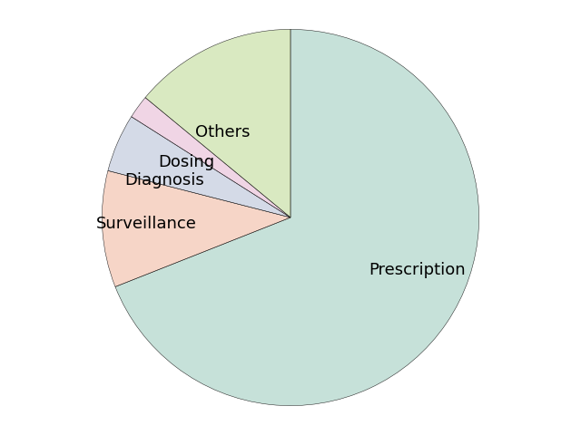
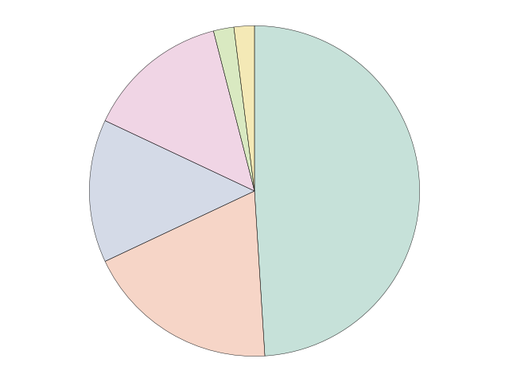

Note
Click here to download the full example code
Piechart AMR review
Note
The values can be changed to display other data.
http://matplotlib.org/examples/color/named_colors.html http://matplotlib.org/examples/color/colormaps_reference.html http://matplotlib.org/api/patches_api.html#matplotlib.patches.Wedge http://matplotlib.org/api/text_api.html#matplotlib.text.Text
- 

- 
15 from __future__ import division
16
17 # Libraries
18 import seaborn as sns
19 import matplotlib as mpl
20 import matplotlib.pyplot as plt
21
22 # Matplotlib font size configuration.
23 mpl.rcParams['font.size'] = 9.0
24
25
26 # ------------------------------------------------------------------------
27 # HELPER METHODS
28 # ------------------------------------------------------------------------
29 def transparency(cmap, alpha):
30 """
31 """
32 for i,rgb in enumerate(cmap):
33 cmap[i] = rgb + (alpha,)
34 return cmap
35
36 # ------------------------------------------------------------------------
37 # FIGURE 1
38 # ------------------------------------------------------------------------
39 # Common configuration.
40 title_font_size = 30
41 labels = ['Prescription', 'Surveillance','Diagnosis', 'Dosing', 'Others'] # labels
42 labels_empty = ['', '', '', '', ''] # labels empty
43 colors = transparency(sns.color_palette("Set2", desat=0.75, n_colors=7), 0.4)
44 explode = (0.00,0,0,0,0) # proportion with which to offset each wedge
45 autopct = ''#'%1.0f%%' # print values inside the wedges
46 pctdistance = 0.8 # ratio betwen center and text (default=0.6)
47 labeldistance = 0.5 # radial distance wich pie labels are drawn
48 shadow = False # shadow
49 startangle = 90 # rotate piechart (default=0)
50 radius = 1 # size of piechart (default=1)
51 counterclock = False # fractions direction.
52 center = (0,0) # center position of the chart.
53 frame = False # plot axes frame with the pie chart.
54
55 # map with arguments for the text objects.
56 textprops = {'fontsize':'x-large'}
57
58 # map with arguments for the wedge objects.
59 wedgeprops = {}
60
61 # Color manually selected
62 colors_manual = ['mediumpurple',
63 'violet',
64 'mediumaquamarine',
65 'lightskyblue',
66 'lightsalmon',
67 'indianred']
68
69 # ---------------------------
70 # plot
71 # ---------------------------
72 # Portions.
73 sizes = [69, 10, 5, 2, 14] # Add proportions
74
75 # reset feature
76 startangle = 90
77
78 # Plot
79 plt.figure()
80 plt.pie(sizes,
81 explode=explode,
82 labels=labels, # Use: labels / labels_empty
83 colors=colors, # Use: colors / colors_manual
84 autopct=autopct,
85 pctdistance=pctdistance,
86 labeldistance=labeldistance,
87 shadow=shadow,
88 startangle=startangle,
89 radius=radius,
90 counterclock=counterclock,
91 center=center,
92 frame=frame,
93 textprops=textprops,
94 wedgeprops={'linewidth':0.35,
95 'edgecolor':'k'})
96
97 # Format figure.
98 plt.axis('equal')
99 plt.tight_layout()
100 plt.title("", fontsize=title_font_size) # Add title.
101 #plt.legend(labels=labels, fontsize='xx-large') # Add legend.
102
103
104 # ------------------------------------------------------------------------
105 # FIGURE 2
106 # ------------------------------------------------------------------------
107 # Common configuration.
108 title_font_size = 30
109 labels = ['Rule-based', 'Tree-based','Case-based', 'Other'] # labels
110 labels_empty = ['', '', '', ''] # labels empty
111 colors = transparency(sns.color_palette("Set2", desat=0.75, n_colors=7), 0.4)
112 explode = (0.00,0,0,0) # proportion with which to offset each wedge
113 autopct = ''#'%1.0f%%' # print values inside the wedges
114 pctdistance = 0.6 # ratio betwen center and text (default=0.6)
115 labeldistance = 0.4 # radial distance wich pie labels are drawn
116 shadow = False # shadow
117 startangle = 90 # rotate piechart (default=0)
118 radius = 1 # size of piechart (default=1)
119 counterclock = False # fractions direction.
120 center = (0,0) # center position of the chart.
121 frame = False # plot axes frame with the pie chart.
122
123 # map with arguments for the text objects.
124 textprops = {'fontsize':'x-large'}
125
126 # map with arguments for the wedge objects.
127 wedgeprops = {}
128
129 # Color manually selected
130 colors_manual = ['mediumpurple',
131 'violet',
132 'mediumaquamarine',
133 'lightskyblue',
134 'lightsalmon',
135 'indianred']
136
137 # ---------------------------
138 # plot
139 # ---------------------------
140 # Portions.
141 sizes = [64, 18, 10, 6] # Add proportions
142
143 # reset feature
144 startangle = 90
145
146 # Plot
147 plt.figure()
148 plt.pie(sizes,
149 explode=explode,
150 labels=labels, # Use: labels / labels_empty
151 colors=colors, # Use: colors / colors_manual
152 autopct=autopct,
153 pctdistance=pctdistance,
154 labeldistance=labeldistance,
155 shadow=shadow,
156 startangle=startangle,
157 radius=radius,
158 counterclock=counterclock,
159 center=center,
160 frame=frame,
161 textprops=textprops,
162 wedgeprops={'linewidth':0.35,
163 'edgecolor':'k'})
164
165 # Format figure.
166 plt.axis('equal')
167 plt.tight_layout()
168 plt.title("", fontsize=title_font_size) # Add title.
169 #plt.legend(labels=labels, fontsize='xx-large') # Add legend.
170
171 # ------------------------------------------------------------------------
172 # FIGURE 3
173 # ------------------------------------------------------------------------
174 # Common configuration.
175 title_font_size = 30
176 labels = ['Bacteremia', 'SSI','UTI', 'RTI' ' C+', 'Gram'] # labels
177 labels_empty = ['', '', '', '', '', ''] # labels empty
178 colors = transparency(sns.color_palette("Set2", desat=0.75, n_colors=7), 0.4)
179 explode = (0.00,0,0,0,0,0) # proportion with which to offset each wedge
180 autopct = ''#'%1.0f%%' # print values inside the wedges
181 pctdistance = 0.6 # ratio betwen center and text (default=0.6)
182 labeldistance = 0.4 # radial distance wich pie labels are drawn
183 shadow = False # shadow
184 startangle = 90 # rotate piechart (default=0)
185 radius = 1 # size of piechart (default=1)
186 counterclock = False # fractions direction.
187 center = (0,0) # center position of the chart.
188 frame = False # plot axes frame with the pie chart.
189
190 # map with arguments for the text objects.
191 textprops = {'fontsize':'x-large'}
192
193 # map with arguments for the wedge objects.
194 wedgeprops = {}
195
196 # Color manually selected
197 colors_manual = ['mediumpurple',
198 'violet',
199 'mediumaquamarine',
200 'lightskyblue',
201 'lightsalmon',
202 'indianred']
203
204 # ---------------------------
205 # plot
206 # ---------------------------
207 # Portions.
208 sizes = [49, 19, 14, 14, 2, 2] # Add proportions
209
210 # reset feature
211 startangle = 90
212
213 # Plot
214 plt.figure()
215 plt.pie(sizes,
216 explode=explode,
217 labels=labels_empty, # Use: labels / labels_empty
218 colors=colors, # Use: colors / colors_manual
219 autopct=autopct,
220 pctdistance=pctdistance,
221 labeldistance=labeldistance,
222 shadow=shadow,
223 startangle=startangle,
224 radius=radius,
225 counterclock=counterclock,
226 center=center,
227 frame=frame,
228 textprops=textprops,
229 wedgeprops={'linewidth':0.35,
230 'edgecolor':'k'})
231
232 # Format figure.
233 plt.axis('equal')
234 plt.tight_layout()
235 plt.title("", fontsize=title_font_size) # Add title.
236 #plt.legend(labels=labels, fontsize='xx-large') # Add legend.
237
238
239 # Show figures
240 plt.show()
Total running time of the script: ( 0 minutes 0.170 seconds)